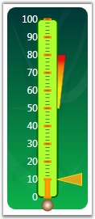

State Indicators are those which indicate some sort of state (eg: - either ON or OFF, TRUE or FALSE etc.,) of the Gauge Control. Active and Inactive will be based on state range. The following are some of the major properties that are implemented.
Table 22: Property Table
|
Property |
Description |
|
ActiveBackgroundBrush |
Gets or sets the background of the state indicator when it is turned on. |
|
ActiveBorderBrush |
Gets or sets the border brush of the state indicator when it is turned on. |
|
ActiveText |
Displays the text when the indicator is active. Default text displayed is ON. |
|
FontSize |
Gets or sets the font size for the text that is displayed in IndicatorStyle.Text mode. |
|
IndicatorHeight |
Gets or sets the height of the state indicator. Default value is 0. |
|
IndicatorStyle |
To change the appearance of the indicators. The available indicator styles are as follows.
CircularLED RectangularLED RoundedRectangularLED Text Custom
Default value is CircularLED. |
|
IndicatorWidth |
Gets or sets the width of the state indicator. Default value is set to 0. |
|
Text |
Displays the text when the indicator is inactive. Default text displayed is OFF. |
|
Value |
Gets or sets the value of the state indicator. If it falls within one of the state ranges the state indicator turns on. Default value is set to 0. |
|
IndicatorCustomGeometry |
Displays the state indicator in the shape specified by a custom Geometry.
Note that the custom shape will be set, if and only if, the IndicatorStyle property is set to Custom. |
State range can be added through StateRanges property of StateIndicator. Use the below code snippet to add state range to indicator.
|
[XAML]
<!--Hosting State Indicator.--> <syncfusion:LinearGauge.StateIndicators> <syncfusion:StateIndicator Name="m_indicator" IndicatorStyle="CircularLED" FontSize="12" FontFamily="Verdana" IndicatorWidth="15" Text="Off" ActiveText="Active" IndicatorHeight="15" Location="50,98">
<!--Hosting State Range to Indicator.--> <syncfusion:StateIndicator.StateRanges> <syncfusion:StateRange StartValue="50" EndValue="80"> </syncfusion:StateRange> </syncfusion:StateIndicator.StateRanges> <syncfusion:StateIndicator.BackgroundBrush> <RadialGradientBrush> <GradientStop Color="#FFFDFCFC" Offset="0"/> <GradientStop Color="SaddleBrown" Offset="1"/> </RadialGradientBrush> </syncfusion:StateIndicator.BackgroundBrush> </syncfusion:StateIndicator> </syncfusion:LinearGauge.StateIndicators> |
|
[C#]
StateIndicator stateIndicator = new StateIndicator(); stateIndicator.StateRanges.Add(new StateRange(180, 240)); stateIndicator.BackgroundBrush = new RadialGradientBrush(Colors.White, Colors.DarkGreen); stateIndicator.ActiveBackgroundBrush = new RadialGradientBrush(Colors.White, Colors.Red); stateIndicator.FontSize = 12; stateIndicator.FontFamily = new FontFamily("Verdana"); stateIndicator.Text = "Off"; stateIndicator.ActiveText = "On"; stateIndicator.IndicatorWidth = 20; stateIndicator.IndicatorHeight = 20; stateIndicator.Location = new Point(58, 80); stateIndicator.IndicatorStyle = IndicatorStyle.CircularLED;
this.lineargauge1.StateIndicators.Add(stateIndicator); |

Figure 73: Linear Gauge With State Indicators
 Binding between State Range and State
Indicator
Binding between State Range and State
Indicator